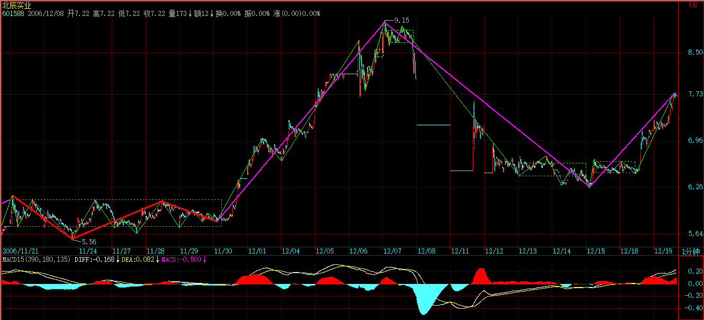
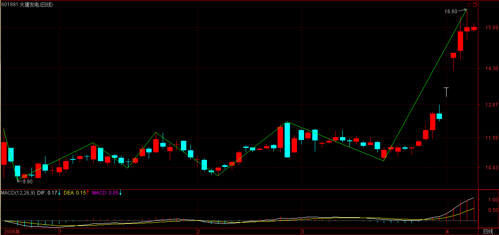
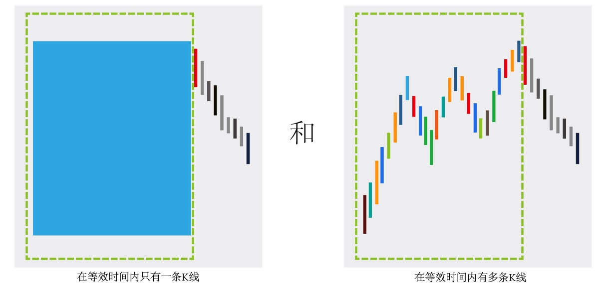

(2007-04-06 15:31:28)
【韶山映山红】本课已经记录阿娇博客／桃花博客注解和配图。】
【韶山映山红】阿娇博客：（娇注：小转大的情况在29课已经表达清楚，此处再细化）】
发现很多人对最基础的背驰问题还是不大清楚，周末，来一补习。
关于如何判断背驰，背驰与盘整背驰的区别之类问题就不说了，这个太基础，连这都没搞清楚，那最好的办法就是重修，而不是补习。
【韶山映山红】静姐说这个区别，趋势背驰一定回到最后一个中枢，盘整背驰不一定回到中枢。这个盘整背驰指的是中枢离开段对进入段的盘整背驰。因为有第三类买卖点的情况，缠师说过要成功避开，所以一般人都认为盘整背驰有两种情况：回中枢，形成第三类买卖点。 我的观点不同，趋势背驰和盘整背驰都一样的返回中枢，区别在于，趋势背驰有同级别的返回中枢，也就是说，至少有一个三段盘整。而盘整背驰只有次级别的返回中枢，也就是说，只有一段返回。★可以做个专题，以后研究。】
【韶山映山红】背驰与盘整背驰的区别是什么？趋势走势类型对应趋势背驰、盘整走势类型对应盘整背驰？如果是这样的答案，缠师有必要问吗？★可以做个专题，以后研究。】
【韶山映山红】盘整走势类型当然只有盘整背驰，当趋势的最后一个中枢没有走出第三类买卖点，而趋势结束的情况，也同样是最后一个中枢的盘整背驰。也就是说，趋势的结束并不都是趋势背驰，还有盘整背驰。结束趋势的盘整背驰实际上也是小转大的一种。★可以做个专题，以后研究。】
转折必然由背驰导致，但背驰导致的转折并不一定是同一级别的。
【韶山映山红】从转折看背驰。转折必然由背驰导致。发生本级别的转折，1，可能源于本级别的背驰结束本级别的走势，开始本级别的新的走势。2，也可能源于低级别背驰导致的，也就是小转大。★会有高级别的背驰导致本级别的转折吗？不会。因为背驰都要区间套，没有小级别背驰就只是高级别进入背驰段。】
【韶山映山红】从背驰看转折。本级别的背驰导致的转折，可以是本级别的，也可以是更大级别的。】
在“教你炒股票29：转折的力度与级别”中有“缠中说禅背驰-转折定理：某级别趋势的背驰将导致该趋势最后一个中枢的级别扩展、该级别更大级别的盘整或该级别以上级别的反趋势。”【韶山映山红】29课对趋势背驰结构力的第一反馈做分类，是反弹和转折的维度。不进[ZD，ZG]是反弹，进[ZD，ZG]是转折。】
这是一个十分重要的定理，这定理说明了什么？就是某级别的背驰必然导致该级别原走势类型的终止，进而开始该级别或以上级别的另外一个走势类型。【韶山映山红】这里对后续走势的分类,包括级别和走势类型两个维度。本级别的另一个走势类型，或者另一个高级别的走势类型，或者已有走势演变成高级别走势类型。】
由于不允许“上涨+上涨”、“下跌+下跌”的情况，所以，这定理对实际操作就很有意义了。【韶山映山红】不允许，有两层意思：１，存在。２，不许。 从分类的角度来说，不允许“上涨+上涨”、“下跌+下跌”的分类的情况。 “上涨+上涨”还是上涨，“下跌+下跌”还是下跌。】
例如，一个1分钟级别的顶背驰，就意味着必然导致一个至少1分钟级别的盘整或下跌走势类型，这就为背驰以后可能的走势以及级别给出了很明确的划定。【韶山映山红】不是说“更大级别的盘整”吗？怎么这里又说是“1分钟级别的盘整或下跌走势类型”？★背驰转折后的更大级别的走势也是本级别走势慢慢走出来的，在本级别的角度看，1分钟级别的顶背驰之后，只有1分钟级别的盘整或1分钟级别的下跌走势类型这两种情况。“导致该趋势最后一个中枢的级别扩展”的时候，背驰之后就是“1分钟级别的盘整”。】
有人经常问，为什么1分钟顶背驰后还涨，那有什么奇怪的，只要有一个1分钟的盘整，那就可以继续涨，这是1分钟顶背驰后可能的情况之一，【韶山映山红】1分钟趋势＋1分钟盘整＋……，至少构成1分钟线段类走势。】
【韶山映山红】阿娇博客：(注：背驰后中枢扩展）。下图是阿娇博客配图。】
【韶山映山红】29课分类有最后一个中枢的级别扩展的情况，这里，缠师在这里为什么要把这个1分钟的盘整单独拿出来说，是1分钟顶背驰后可能的情况之一，而不是像阿娇博客那样说更大级别的中枢？★ 这里体现的是，什么时候，用“最后一个中枢升级”的眼睛看走势。什么时候，用“有一个1分钟的盘整”的眼睛看走势。 这里如果划分为5分钟中枢，看5分钟走势，就要等这个5分钟中枢的第三类买卖点出来，才能做5分钟级别的走势分析，否则，就要把之后的1分钟走势当做小转大去分析，自找麻烦了。所以干脆不升级，直接就在1分钟的级别上做同级别分解，分析1分钟级别的演化。】神燕说，这里缠师是为了“强调”反弹可以不转折，他的重点不在反弹的结构，而在背驰的级别，想说明，一个背驰，只要有一个同级别的回调，就完成任务了，而29课，重点讲的是形态结构，不同层面看问题而已。想突出的重点不同。】
当然，还有其他可能的情况，例如，最极端的，制造出一个年线级别的下跌，但不能说这个制造是由于1分钟顶背驰造成的，因为这是1分钟顶背驰后，形成的盘整或下跌逐步级别扩张，最后才慢慢形成的，如果随便看到一个1分钟顶背驰就说要形成年线级别大调整，那就是脑子水太多了。【韶山映山红】1分钟顶背驰后，形成的盘整逐步级别扩张，或形成的下跌趋势逐步级别扩张，最后才慢慢形成的。这里描述的是小转大的演化。】
如果市场的转折与背驰都有这在级别上一一对应关系，那这市场也太没意思、太刻板了，而由于这种小级别背驰逐步积累后导致大级别转折的可能，才使得市场充满当下的生机。【韶山映山红】小转大的演化，就是一个逐步积累的过程。大级别转折以逐步既成事实的结果呈现出来。】
注意，这两种不同的转折方式的区分是十分关键的。【韶山映山红】“两种不同的转折方式”，是指本级别背驰导致本级别转折、小级别背驰演化大级别转折。 从背驰的角度看，背驰导致原走势的结束之后，开始的两种级别的走势：该级别或更高级别。这是从小往大的角度看，背驰带来了什么。 另一个从大往小的角度看，转折的时候谁谁都在干什么，也就是下面说的两种：背驰级别等于当下的走势级别、背驰级别小于当下的走势级别。】
所有的转折都与背驰相关，但加上背驰的级别与当下走势级别的关系，就有了这两种不同的转折方式。
由于背驰的级别不可能大于当下走势的级别，例如一个30分钟级别的背驰，只可能存在于一个至少是30分钟级别的走势类型中，所以就有这两种不同转折方式的明确分类。【韶山映山红】对当下走势而言，没有更大级别的背驰。如果本级别背驰是大级别背驰区间套的一环，分析本级别转折的时候，大级别背驰对未来的走势预期有指导意义，但并不能真正约束本级别走势的演化。】
一、背驰级别等于当下的走势级别
例如，一个30分钟的走势类型，出现一个30分钟级别的背驰，那么这个背驰至少把走势拉向该30分钟走势最后一个中枢，当然就会跌破或升破相应的高点或低点。【韶山映山红】这里只说是“一个30分钟的走势类型”，而没有说具体是趋势还是盘整。是否可以认为，盘整走势也有同样的分析，这个背驰至少把走势拉向该走势最后一个中枢？★可以做个专题，以后研究。】
注意，这种情况包括进入背驰段的情况，【韶山映山红】阿娇博客：(娇注：趋势背驰与盘整背驰）】例如，一个30分钟的走势类型，在30分钟级别进入背驰段，当然，这个背驰段并不一定就演化成背驰，因为，小级别的延伸足以使得大级别最终摆脱背驰，这与当下的走势判断相关。【韶山映山红】什么是“进入背驰段的情况”？本级别趋势背驰要求c包含B中枢的第三类买卖点，但是从c1离开B中枢开始，就算是进入背驰段的情况。进入背驰段，因为小级别的延伸而最终摆脱背驰，转折也就失败了，原走势继续。这种情况不在29课的转折的完全分类里面。既然“小级别的延伸足以使得大级别最终摆脱背驰”，那么，为什么要把这种情况列入“背驰级别等于当下的走势级别”呢？有什么指导意义？★可以做个专题，以后研究。】如果没有小级别背驰参与区间套的背驰，只是背驰段或者说离开段自己的不断延伸，就会是背驰级别小于当下走势级别的情况，可见这里说的包括进入背驰段的情况，应该是曾经有过本级别背驰，只是小级别延伸破坏了大级别背驰，也就是缠师说的“最终摆脱背驰”，如果曾经没有背驰，何来摆脱？】
二、背驰级别小于于当下的走势级别
这种情况下，是走势已经明显没有相应级别的背驰，例如，一个30分钟的走势类型，明确显示没有出现30分钟的背驰，也就是背驰段最终不成立，【韶山映山红】如果背驰段成立，小级别背驰就是大级别的背驰点。背驰段被破坏就不再是背驰段了，这时候小级别的背驰也不再是背驰点。小级别背驰之后走势的演化形成了大级别事实上的转折，就是小转大。其判别标准，线段类走势的小转大就是回到大级别的前高/前低，中枢走势的小转大就是形成了新的大级别走势类型。如果没有形成新的大级别走势类型就回到前中枢，那是小级别走势破坏大级别走势，还要看后续的演化，不一定是小转大。★★】但却出现一个1分钟级别的背驰，用一个最简单的形式向上的a+A+b+B+c，A、B是30分钟中枢，在c中出现1分钟背驰，而c对b在30分钟级别并没有出现背驰，这时候并不必然保证c的1分钟转折的最终走势就一定不跌回B里，【韶山映山红】c对b不背驰，正常演化就不会回到B。并不必然保证，是因为，还有小转大的可能。其实还有单纯的小级别走势带来的破坏。这里没有明确最终走势的级别。★ 】但即使这个回跌出现，其形式也和第一种情况不同。这第二种情况，必然要先形成一个比1分钟级别要大的中枢，然后向下突破，最终形成回跌到B中的走势。【韶山映山红】为什么1分钟背驰之后，不能是1分钟下跌趋势直接跌回B中？从走势演化的角度看，当然可以是1分钟下跌趋势直接跌回B中，只不过，那样就不是小转大的回跌了。这里既然说小转大的情况，从走势分类的角度看，“必然要先形成一个比1分钟级别要大的中枢”，确定走势是大级别。】
【韶山映山红】下图是桃花博客配图。线段类趋势的离开段，可见桃花也认为，没有本级别背驰的原因是小级别延伸。至于大级别返回B中枢，桃花配图并不贴切，C点并不是小转大的大，而是小级别返回。】
有人可能要问，第一种情况中如果是5分钟级别的回跌，也会形成一个比1分钟级别大的中枢，那和第二种情况有什么区别？【韶山映山红】第一种情况：背驰级别等于当下的走势级别。第二种情况：背驰级别小于于当下的走势级别。】
这区别太大了，在第一种情况中，其回跌是必然的，而第二种情况，在形成一个比1分钟大的中枢后，并不必然回跌，可以往上突破，使得a+A+b+B+c继续延伸。【韶山映山红】同级别背驰的力度衰竭大，决定了必定回中枢，小级别背驰的力度衰竭不足，不一定回中枢，要小转大的慢慢积累。30分钟的上涨趋势，1分钟背驰之后，“形成一个比1分钟大的中枢”，比如5分钟中枢，然后继续向上，也就是说，这里形成了一个5分钟的向下走势，但只是一个中继。这个5分钟的向下走势可以回B中枢，也可以不回。】
【韶山映山红】阿娇博客：(娇：上下中枢的区别）。下图是阿娇博客配图。】
这种小级别背驰最终转化成大级别转折的情况，最值得注意的，是出现在趋势走势的冲顶或赶底之中，这种情况一般都会引发大级别的转折，【韶山映山红】引发大级别的转折的前提是冲顶或赶底。形成趋势之后，相对高位的急速拉升，更要注意小转大的可能性。】
这种例子前面都说过，例如2007.01.04的工行，
【韶山映山红】601398工商银行。5分钟图上的线段中枢划分，以及5分钟线段中枢级别的走势类型划分。】
【韶山映山红】601398工商银行。2007.01.04的30分钟图上的笔中枢划分，趋势上涨，第三类买点之后中枢上移，没有背驰。】
【韶山映山红】601398工商银行。2007.01.04的5分钟图上的线段中枢划分，向上盘整走势，第三类买点之后，线段类上涨趋势，没有背驰。】
【韶山映山红】601398工商银行。2007.01.04的1分钟图上的线段中枢划分，上涨趋势。】
【韶山映山红】601398工商银行。2007.01.04的1分钟图上的线段中枢划分，上涨趋势最后一个中枢，没有背驰。】
【韶山映山红】601398工商银行。2007.01.04的1分钟图，上涨趋势最后一个中枢的最后离开段的笔划分，1分钟笔划分的a+A+b+B+c上涨趋势，c对b背驰。】
【韶山映山红】601398工商银行。最后的局部放大。1分钟笔划分的a+A+b+B+c上涨趋势，c对b背驰，c内部c3对c1没有线段类盘整背驰，顶部更小级别的K线背驰。】
【韶山映山红】601398工商银行。2007.01.04的1分钟图，上涨趋势最后一个中枢的最后离开段以及下跌走势的笔划分。笔中枢级别上涨趋势+笔中枢级别向下盘整。】
【韶山映山红】601398工商银行。线段内部背驰，引起线段下跌直接跌破中枢。这里是线段以下级别的小级别背驰，引起线段级别的转折，然后再演化出更大级别的转折。】
【韶山映山红】601398工商银行。1分钟级别当下的同级别分解划分的二卖。】
【韶山映山红】601398工商银行。课文当天的日线图。笔中枢划分。】
【韶山映山红】下图是桃花博客配图。】

2006.12.07的北辰实业、
【韶山映山红】601588北辰实业。30分钟图上笔中枢划分。a+A+b+B上涨趋势。】
【韶山映山红】601588北辰实业。1分钟图上线段中枢划分。递归的5分钟a+A+b+B上涨趋势。】
【韶山映山红】601588北辰实业。B中枢的最后离开段只是1分钟线段的线段类上涨趋势。】
【韶山映山红】601588北辰实业。1分钟线段的线段类上涨趋势。】
【韶山映山红】601588北辰实业。线段类上涨趋势的最后一段。笔中枢划分的a+A+b+B趋势。】
【韶山映山红】601588北辰实业。笔中枢划分的a+A+b+B趋势，笔中枢的三买转二卖，然后形成线段中枢。】
【韶山映山红】601588北辰实业。5分钟中枢的1分钟线段的线段类上涨趋势离开，线段内部笔中枢离开段的小转大，引起线段下跌，演化成1分钟下跌趋势。后续还有更大级别的盘整。】

【韶山映山红】601588北辰实业。课文当天的日线图。笔中枢划分。】
【韶山映山红】下图为桃花博客配图。】
2007.01.22的水井坊
【韶山映山红】600779水井坊。30分钟图上线段划分。30分钟线段的线段类上涨趋势，小转大跌破前高，然后30分钟线段盘整。】
【韶山映山红】600779水井坊。1分钟图，线段中枢划分。30分钟图上的线段类上涨趋势的最后线段。1分钟向上盘整+5分钟延伸升级中枢+1分钟线段类盘整向上，中枢离开段没有盘整背驰，离开段内部的三段也没有盘整背驰。最终一段跌穿5分钟中枢。】
【韶山映山红】600779水井坊。1分钟图，线段中枢划分。看着5分钟延伸升级中枢别扭的，看这个不升级的。结果一样。】

【韶山映山红】600779水井坊。顶部放大。难以辨别的小转大。】
【韶山映山红】600779水井坊。课文当天的日线图。笔中枢划分。日线笔的线段类上涨趋势，小转大跌破前高。】
【韶山映山红】下图是桃花博客配图。】
等。
以上两种情况，【韶山映山红】本级别背驰和小级别背驰的小转大两种情况。】对走势的分解也是很有意义的，例如对一个30分钟的走势类型，其完结也同样有相应的两种情况，【韶山映山红】走势分解的意义是什么？就是走势类型划分的时候，不能以本级别背驰为唯一划分依据。真正的划分依据是转折点，而不介意这个转折点两边的走势级别。 这里不说“趋势”，而是说“走势类型”，说明盘整走势类型也一样。走势类型的完结有本级别背驰和小转大两种情况，对应能够操作的结束点就是第一类买卖点和第二类买卖点。】
最普通的一种，例如出现一个30分钟的背驰，从而完成一个30分钟级别走势类型，在这种情况下，对该走势类型的分解就不存在任何含糊的地方，前后两个走势类型，就以该背驰点为分界；【韶山映山红】本级别背驰的转折，转折点就是背驰点，走势划分就没有歧义。】
至于小级别背驰引发大级别转折的情况，这种情况比较复杂，但分解的原则是一致的，就是：
缠中说禅走势类型分解原则：一个某级别的走势类型中，不可能出现比该级别更大的中枢，一旦出现，就证明这不是一个某级别的走势类型，而是更大级别走势类型的一部分或几个该级别走势类型的连接。【韶山映山红】例如，一个5分钟的走势类型中，不可能出现30分钟以上的中枢，一旦出现30分钟中枢，就证明这不是一个5分钟的走势类型，而是30分钟走势类型的一部分，或几个5分钟走势类型的连接。也就是说，在我们划分走势类型的时候，遇到某处更大级别中枢的组合，要考虑两种划分：更大级别走势类型，几个该级别走势类型的连接。并不是凡有大中枢就都升级，在中阴阶段，以及走势转折区域，在中枢分析的角度，都是大中枢，而在走势类型分解的角度，是几个该级别走势类型的连接。】
这里，把上面第二种情况下的分解可能分析如下：【韶山映山红】“第二种情况”是指“背驰级别小于当下的走势级别”。】
不妨还是以上面向上30分钟级别的a+A+b+B+c为例子，在c中出现一个1分钟级别背驰，不妨假设后面演化出一个30分钟中枢C，【韶山映山红】C是什么中枢？向上走势的回踩中枢？向下走势的回升中枢？不属于走势类型划分的多义性中枢或者中阴中枢？ 如果C和B没有任何重叠，就是原趋势的延伸，所以C应该是向上走势的回踩中枢。如果C和B有重合，就是演化成大级别中枢，这时候还没有转折，所以C依然是向上走势的回踩中枢，c不一定有合适的结构，所以（B+c+C）不一定完成了升级。】
【韶山映山红】c已经有B的三买了。没有趋势背驰，意味着力度上的几种可能：c1>b，c>b，c3>c1。“在c中出现一个1分钟级别背驰”，这个1分钟走势必定被划分为c3的一部分，而且力度上c3>c1，否则就是c级别的线段类盘整背驰了。】
【韶山映山红】由于c不背驰，也就是说，小转大的前提就是中枢移动的情况，所以这里不说B中枢的演化，而是另外有一个“30分钟中枢Ｃ”。也就是说，B中枢的扩展升级的情况不算。如果B中枢扩展升级，就还要有30分钟级别的向上走势，形成日线级别的a+A+b走势，否则，这个扩展升级就只是中阴阶段的过渡过程，最终还是要分解为30分钟上涨趋势的转折。】
如果C和B没有任何重叠，那就意味着原来的a+A+b+B+c并不是一个完成了的30分钟走势类型，该走势类型将延伸为a+A+b+B+c+C，相应的分解要等到该走势类型完成了才可以进行；【韶山映山红】讨论c的小级别背驰，说明这时候本来就没有趋势背驰。小转大之后形成的大级别走势只是一个回踩中枢，是中继。这种情况下，如果c线段类盘整背驰的二卖出了，就要降级操作去回补，因为那个二卖本来就不是本级别的二卖。】
【韶山映山红】下图为桃花博客配图。】
如果C和B有重合，【韶山映山红】这就是两个中枢震荡区间有重叠的扩张升级的的走势形态了。】那么a+A+b+B+c+C=a+A+b+（B+c+C），其中（B+c+C）必然演化成一个日线中枢，【韶山映山红】“必然演化成”，说明这个时候还不一定完成了日线中枢。后面的问答里也说了，“2个30分钟中枢B\C如果有区间重合部分，必然扩展成一个日线级别的中枢，并不是说（B+c+C）就是形成了一个日线中枢。” c包含B的第三类买卖点，但是有可能C又包含了c的一部分，所以（B+c+C）不一定完成了升级。】那么a+A+b+B+c只是一个日线级别走势类型的一部分，如果一定要按30分钟级别来进行同级别分解，那么该分解点就是那1分钟的背驰点，a+A+b+B+c+C=（a+A+b+B+c）+C。【韶山映山红】“按30分钟级别来进行同级别分解”，C划分为独立的走势类型，也就是说，C属于30分钟盘整走势，或者30分钟下跌趋势。什么情况下我们要选择这个“一定要”的划分呢？如果仅仅是日线中枢内部结构的分解划分，显然不是这个“一定要”的情况。也就是说，趋势转折才是“一定要”的情况。】
【韶山映山红】走势类型分析的划分是a+A+b+（B+c+C），其中（B+c+C）是日线中枢，a+A+b是30分钟的进入段，后面还要有30分钟的离开段，以及日线中枢的第三类买点，否则就是日线中枢发生了的延伸升级，或者第三类卖点之后的向下。】
【韶山映山红】同级别分解的划分是（a+A+b+B+c）+C。c的背驰点不一定是整个走势的最高点，之后的二卖可能高于c背驰的这个名义上的一卖，所以按照习惯的划分，或者是高级别划分时的标准化处理，都有可能把C重新组合。这就是44课进一步阐释的问题。】
【韶山映山红】下图为桃花博客配图。】
有了以上的例子，就对如何用背驰对走势分解的基本原则有一个大概的了解了，【韶山映山红】背驰结束走势类型，所以作为走势划分的依据。】熟悉了这些分解方法，市场的走势图就不会是天书了，而是如自己的掌纹一样清晰可辩。【韶山映山红】走势不会划分，如“天书”一般，是因为不熟悉各种背驰后走势分解的基本原则与方法。】
【韶山映山红】以下跌趋势为例，a+A+b+B+c趋势的c的完全分类。划分维度：c和a'的背驰情况。
1，c背驰，或者c小转大，反弹段a'回到[ZD，ZG]，转折，更大级别盘整or以上级别反趋势。（a+A+b+B+c）+（a'+A'+ ……）
2，c背驰，或者c小转大，反弹段a'回到[DD，GG]、不进[ZD，ZG]，B扩张升级。（a+A+b）+B~。
3，c背驰，或者c小转大，反弹段a'小转大，没有回到[DD，GG]，c2、c3与a'构成C，C和B有重合，扩张升级，（a+A+b）+［B+c+C］。
4，c背驰，或者c小转大，反弹段a'小转大，没有回到[DD，GG]，c2、c3与a'构成C，C和B没有任何重叠，原趋势延伸，a+A+b+B+c+C。
5，c背驰，或者c小转大，反弹段a'小转大，反弹段a'不破前高/前低，原趋势延伸，a+A+b+B+c+C。
6，c不背驰，c小转大，反弹段a'没有回到[DD，GG]，c2、c3与a'构成C，C和B有重合，扩张升级，（a+A+b）+（B+c+C）。
7，c不背驰，c小转大，反弹段a'没有回到[DD，GG]，c2、c3与a'构成C，C和B没有任何重叠，原趋势延伸，a+A+b+B+c+C。
8，c不背驰，c小转大，反弹段a'不破前高/前低，原趋势延伸，a+A+b+B+c+C。
9，c不背驰，小级别背驰，没有小转大，仍然是小级别转折，但是，转折后横扫天下。赶上了，就认命吧。
10，
动力学做预判，形态学做验证，或延后并且不精准的反推。】
今天深圳已经实现对那条压力线的冲击，不过还没有突破站上去，某种程度上，这是汉奸最后的防线了，一旦突破站稳，那深圳的1万点就在本ID的强大炮火下了。
昨天说了，汉奸现在也到处哭诉，在市场上没法成功，就在市场下努力，也亏汉奸干得出。希望下周汉奸能倾其所有，在这里大打一战，别搞到本ID都没兴趣搭理你们就没意思了。
目前，二线股的行情已经有点不可阻挡了，由于10元上下的股票不断往上顶，就促使整个股价结构发生松动，15、20、30、甚至更高的二线股都被带动起来，由此也就知道本ID当时特别从10元上下二线股下手的深意。【韶山映山红】什么是股价结构？比价系统。可以做个专题，以后研究。】
现在，本ID的星火已经有点燎原，也就不必要一定是什么10元上下的，只要盘整到位，业绩支持的二线股，都要启动，【韶山映山红】形态，盘整到位。基本面，业绩支持。】从而整个股价结构上一台阶，为下一轮三线股的再启动腾出空间。【韶山映山红】这里是原文唯一提到股价结构的地方。可以做个专题，以后研究。】
不过，任何时候都不应该追高，应该选择好买卖点，特别对于散户来说，否则，一个小的震荡就足以出问题。【韶山映山红】“选择好买卖点”。买卖点的定义是一回事，买卖点的可操作性是另外一回事。买卖点也有三六九等。】
目前，在政策上存在微妙的地方，汉奸的哭诉能起多大作用，谁都说不准，那是另外一个战场的战争，这里就不方便说了。
2007-4-6 15:32
[匿名] YY 2007-04-06 15:40:08
老大，能不能说点新鲜的东西啊
课程好久没更新了
====
当然，但现在很多人跟不上，用一两节时间来补习一下，也是必要的。
2007-4-6 15:42
[匿名] 平安保险 2007-04-06 15:40:40
老师 是不是新股的周线还没有走出来 就不会那么快启动啊 这时候 看什么级别的 601318 这样的股票 短期是不是不值得参与 什么线都走不出来 要象大唐发电 四个月了 才会发作 盼复
【韶山映山红】601318中国平安。】
【韶山映山红】601991大唐发电。】

==
新股就看短线的图形。
2007-4-6 15:43
[匿名] 缠心雕龙 2007-04-06 15:42:05
博主好，39课中讲到的同级分解流程有点疑问：
这种操作不管这么多，只理会一点，就是Ai与Ai+2之间是否盘整背驰，只要盘整背驰，就在i+2为偶数时卖出，为奇数时买入。如果没有，当i为偶，若Ai+3不跌破Ai高点，则继续持有到Ai+k+3跌破Ai+k高点后在不创新高或盘整顶背驰的Ai+k+4卖出，其中k为偶数。
--
请问，当Ai与Ai+2之间未盘背，若Ai+3不跌破Ai高点，而Ai+4对Ai+2盘背，Ai+4卖不卖？【韶山映山红】当然要卖。任何一个盘整背驰的时候都要卖。所谓“Ai+4对Ai+2盘背”，实际流程上就是“Ai与Ai+2之间盘整背驰”。】
看原文应该是说不卖，则不卖的话，意味着即使发生Ai+4对Ai+2盘背，也不一定就卖出，还要看Ai+3是否跌破Ai高点。为何不在Ai+4先出来呢（可以避免Ai+5出现大跌）？【韶山映山红】这个人完全没有看懂39课。当Ai与Ai+2之间未盘背，Ai+3也没有跌破Ai高点，Ai+4对Ai+2盘背，遇盘背就卖出，原文说的就是Ai+4先出来，这个人自己在乱讲一气。】
==
为什么不卖？不是有这一句-或盘整顶背驰的Ai+k+4卖出
2007-4-6 15:45
[匿名] 后知后觉
2007-04-06 15:44:23
感谢禅主的教诲，赐我打开愚钝的钥匙！
如你所分析，的确现在都很谨慎。不过，低开后瞬间拉起，还是换了思路了。只是不知道是盘中主力拉起，还是场外进来的饿狼？
按照质地，分析价值，都感觉601318值得搞，只是没有老大这样的人去挑逗，它股性不是很活。下周平安出年报了，申银的分析报告我看了，挺细的，业绩应该在0。7～1。5，就看一些东西怎么计提估值了。
今日平安表现相对有些亢奋，好像有些“驿动”的渴望。按成本分析，现在就是第一天尾盘的价位。不知道老大是否有兴趣去在年报前后去干一票？
期待你的回答和分析！
谢了！
==
平安没什么问题，现在最大的压力是有限售部分，但不构成实质影响。
【韶山映山红】601318中国平安。】

后面几个大家伙的业绩都很好，汉奸也少了一个借口
2007-4-6 15:49
[匿名] 新浪网友 2007-04-06 15:45:33
老师好. 大唐电信昨日发布业绩预告，早前预计扭亏为盈在昨日的预告中变成了预亏，令市场哗然，股价也因此跌停。传闻沸沸扬扬.
我是新股民 我现有（600198）15000股19.65买进 从来没有见过这样的 架势！现在不知道是去是留 请教该如何是好？ 谢谢
【韶山映山红】600198大唐电信。】
====
这没什么，如果有经验，今天可以补仓，弄两次短差成本就下来，这股票经过洗盘，还会上去的，不过需要点时间。【韶山映山红】大级别没有背驰。】
2007-4-6 15:53
[匿名] 那一天 2007-04-06 15:45:37
缠姐我是同学介绍来的,刚学到十八课
您在十七课反复用到级别这两字, 能否给个对'级别'的准确解释!
我对级别的理解有两种:
这包含在其中的就是次级别.
是否两种理解都对??
我先谢您了!
==
课程里都有，请先把所有课程都看一遍。
2007-4-6 15:57
[匿名] 兰兰 2007-04-06 15:56:08
姐姐好!同学们好!好久没有和姐姐聊了!
向姐姐请教细节:
本为0后,挣股票做短差每次卖出时,只收回本金,对吗?如3000元本金,每次短差都是拿回3000元,股价涨到30元短差买点时只能买100股对吗?
==
一般，成本为0后，可以用先卖后买的方法，例如20卖1万，19就可以回补1万多股了，这样股数越来越多，前提是这股票还有中长线潜力。【韶山映山红】其实，除非是价格翻番，否则要做短差降低成本，方法都是先卖后买，区别只是回补的数量。前期是回补同样的股数，差额就是收回的本金；成本为0后，回补同样的金额，这样股数越来越多。】
2007-4-6 16:00
[匿名] 瞎鼓捣 2007-04-06 15:58:50
老大好
原来备驰段也不一定发生备驰啊，这种情况多不多？具体怎么分辨？
==
这很正常，如果用MACD来辅助看，拉回0轴后再上去，都可以先看成是进入背驰段，例如现在大盘的日线上，【韶山映山红】前提是，中枢先拉回0轴。如果没有拉回0轴呢？可以做个专题，以后研究。】
但最后是否黄白线创新高，在刚走的时候是不可能知道的，然后就要看小级别的结构，如果小级别的走势特别强，使得黄白线创出新高，那就不存在背驰的问题了。【韶山映山红】离开段内部结构的演化才是关键。】
2007-4-6 16:04
[匿名] 中信海直 2007-04-06 16:00:50
请问mm，为什么有的三段重叠算中枢，有的就不算，是不是只有均线交叉的情况下才算作中枢
==
和均线没关系，关键是要都是次级别的【韶山映山红】更低级别的不算。】
2007-4-6 16:05
[匿名] 新年好 2007-04-06 15:48:31
请问缠姐，今天课中的两种情况，如果是第二种30分钟向上情况，如果是C和B没重合，是不是就不用参与，如果是C和B重合，是不是在那个1分钟的背驰点先出来？但是如果预先判断会不会重合呢？【韶山映山红】背驰点不出来，否则级别就乱了。背驰之后的盘背可以出。之后的中阴中枢和三卖的情况可以预判是否重合。】
==
这负责，以后会说到，
2007-4-6 16:06
对不起，周末要出去腐败，周五北京的交通很麻烦，本ID虽然不用自己开车，但走得晚，塞车也很难受，先下了。
各位周末腐败快乐。
再见。
2007-4-6 16:10
【韶山映山红】背驰是把走势中的一种状态拿出来，定义其为背驰
初学缠论的人不要看，这篇提到的问题不会在初期遇到，这里的一些看法和价值观念会影响到初学缠论的人对缠论和缠论中背驰概念的认识。缠论中的背驰概念才是缠论的，这里的背驰概念是我的，我并不能确认这种概念和缠论中的冲突有多大。
背驰是定义出来的。【韶山映山红】背驰是定义出来的。符合定义的那个状态就是背驰。定义的目的是为了操作有一个依据。】
走势在一个有限时段内K线的数量只有两个可能：一条K线和多条K线。
一条K线的那种，里面是这样的：
所以这个现象可以换一个说法，就是：走势在一个有限时段内K线的形态只有两个可能：K线之间有重叠和没有重叠的。
在有多条K线的那种情况下，还可以分成两种，就是有多条K线重叠的那一部分是偏上还是偏下：
这种偏下和偏上使到最开始一段K线和最后一段K线出现了大小差异。
偏下的这一种，把时间段划分到最后一段，它其实还是“只有一条K线”的情况。
所以走势转折的地方只有两种形态：一条K线和多条K线，并且多条K线的那种情况，还是K线重叠那部分偏上的情况。

或者这样说：走势会以“一条K线”、或“偏心向上的多条K线的组合”这两种形式出现转折。
更通俗的说法就是走势转折时只有两种情况，一种快转，一种慢转。
这样表示熟悉些：
对比这两种情况的不同，一条K线转折的情况，它无法对比，因为，它就一条K线，无法对比，所以完全不知道这一条K线在什么时候停，以这种形式产生转折的走势，转折时是断裂的，在时间上是随机的。
多条K线的那种，它可以对比，因为后面的一段K线比前面一段K线要短。
回到多条K线中偏心向下的那种情况，它也是不可以对比的，因为后面一段比前面一段长，那后面一段长到什么时候才结束？
所以，即使不按前面的那个逻辑，在这里也可以转入到把它归类为无法对比的情况，和只有一条K线是同一类。
也可以这样理解，前后两段分别在某个时间内是一条K线，所以在某个有限时间内，这里这是一条K线。
所以多K线偏心向下的这种情况是等同于一条K线的情况。
————————————————————
由此可以可看，走势转折中的一条K线和多条K线这两个可能性之中，一条K线是不可对比的，多条K线是可以对比的。一条K线是不存在操作这件事的，多条K线是可操作的，然后为了表达这种可操作的K线形态，它被命名为：背驰。
也就是说，“背驰”这个东西是命名出来的，你既可以把一条K线的那种转折叫做“背驰”，然后在每次这种“背驰”出现的时候做买卖，也可以把多条K线的那种转折叫做“背驰”。而现在最终把多条K线的那种情况叫做“背驰”，是因为它是可对比的，所以操作的是它，所以它叫背驰。
这非常灾难。因为一直以来认为背驰是归入走势本身的属性，是客观存在的，不以人为依归，但是现在发现背驰只是一个命名，它是在两种走势的可能性随意选择一种，然后把它定义为背驰，完全就不是走势的本身，背驰是和线段，中枢这些是同一类的东西，是走势中某一类特定位置特定形态的一个命名。
出现这种情况是一个价值观念（或者叫潜意识）一直潜藏在意识中未被发觉，这个潜意识是【背驰=转折】，或者【背驰-->转折】，一直以来“背驰”和“转折”这两个东西之间“被”划等号了。
我们寻找“背驰”，无论它是实时还是未来历史，我们总是假设“背驰”是存在的，背驰就是转折，而事实上背驰只是一个命名，我们要找的真实其实是“转折”，而“转折”这个实体有两种情况，一种是一条K线的，一种是多条K线，当我们以为“背驰”就是“转折”的时候，总会不断地在这种“背驰”中碰到一条K线的转折。
为什么会出现这种难堪？然后那个正在那么努力操作的那个“背驰”又是什么鬼？
为什么会出现把背驰认定是完全的转折的起因，简单来说是入了迷了。因为无论以何种情况下学得“背驰"，除了自明之外，都是从别人处学来的。而别人要传递这个概念的时候自然只能用一种由因而果的过程来述说，在这个过程中，学的人就不知不觉中进入了背驰定义后的状态，而不知背驰出现前的局面。
以一个完全空白的人通过缠论学习为例子，在这之前这个人是未曾听闻过“背驰”这种东西的，然后在学习的过程中，他就会知道世上有种东西叫背驰，然后在这个从无到有的过程中，人就己经慢慢走入到背驰的语景中，被圏定在背驰这个价值观念之内，而且还是顺着“缠论中的背驰”这样一个过程中。
在“缠论”这个价值体系之内，在缠论里面所认识到的背驰，确实是转折的唯一属性，所以在这时【背驰=转斩】，因为这时它是在定义背后的，所以这个背驰确实是走势的本身，这是一个受限的背驰，专指那种【由多条K线组成的己经转了的折】，并且那个定义是不会被看到的。只有偶然站在缠论的外部，才看到背驰是被定义出来的，它是标明走势转折两种情况中的一种，这样的“专指背驰”并不是走势本身而只是一个定义。
然而站在缠中说禅的角度，缠论下的“背驰”确实就是那个“背驰”，因为既然那个东西是定义成“背驰”的，“背驰”当然就是“背驰”。
就都是命名惹的祸，因为中文上的“背驰”这两个字是有它自己的内蕴的，比如说这个车背驰了，虽然这句话不知所云，但在中文的语境中大家都听得出，这车不好了，就是说，无论背驰是指什么，单单这两个字放在一起，它就是指一种特定的物理现象，而现在借用这种物理现象指代转折时两种可能性中的其中一种，文字的内蕴污染了分类的客观了。
所以当人以买背驰方式去买转折，单单是这两个字的内蕴，就己经在述说着市场不好了，而在一个下行的市场中，当它不好了，自然就是会上行了。这是很严重的幻觉，这有点像咒语了。
那么第二个问题，既然这样，那这个正在努力操作的“背驰”是什么鬼？
它就是现有概念下的背驰段，我们正在买卖的背驰是实时中的背驰段，虽然一方面逻辑上我们不应当在背驰段上操作，或者说不应当以追逐背驰段为目标而操作，而应当以追逐背驰而操作，而事实上我们操作的时候所操作的，就是现在背驰段那个概念的东西。因为非常简单，无论是这三种情况中的那一种，那一种之中的那一段，它都是背驰段。
所以非常拗口的一句话：
在背驰(点)上操作，是以找背驰为目的而不应当在背驰段上操作，但操作的时候永远都是在操作背驰段。【韶山映山红】背驰也是有级别的，所以背驰点总是相对的。】
因为本质上背驰并不是市场的属性，它只是一个命名，上图中三种情况任何一种都可以命名为背驰，只要命名后，每次都是以该种形态（背驰）的走势为目标就行。
而为什么要专门找第三种去操作，因为只有第三种是有对比的可能，这是唯一一种可以有逻辑地被操作的点，以这种有逻辑的点多次地操作是可以有积累的，无论是金钱还是知识还是经验。但当以第三种为目标去操作的时候，不可避免地会遇到另外两种情况。因为我们要买的是“转折”，而转折是包含了上面三种情况的，第三种被命名为“背驰”的是转折中的一种。也就是说，我们是以“背驰”去套“转折”，而要套“背驰"，只能在现实的背驰段操作，而背驰段则可以任意发育成上述三种可能性中的一种。
不要说在缠论刚出现时那种他人知识层面上无法解释这种局面，而即便到了现在这么多相关体系的知识铺垫，依然好难解释这些前因后果。
[2018-11-13]：背驰这种东西在市场中是真实存在的，所以用缠论去找背驰是实在的，不但找的方法是实在的，要找的东西也是实在的。但背驰始终是一个定义下才显现的东西。存在并不等于真实，真实并不等于存在。2018年，用来定义“千克”的铂铱合金圆柱体原器失准，科学界用物理常数“移动质量1千克物体所需机械力换算成可用普朗克常数表达的电磁力”来重新定义“千克”，这个事情十分类似于背驰的情况，重量千克是客观存在的，但“千克”这个东西是定义出来的。
“千克”原器失准，科学界将用物理常数定义“千克”www.thepaper.cn
【韶山映山红】我们生活中，与背驰这个定义更类似的，是智商。什么是智商？就是智商测试所能够测出来的那个东西。与聪明有关，却又有限，就像背驰与转折。】
编辑于 2018-11-25
高兴，第一次跟解兄的思维站在同一起跑线，第一次不用特意去思考才知道解兄在说什么，且第一次把这种东西比解兄提前说出来。
背驰与转折这是我对这个问题的看法，虽然不及解兄详细，细节上有很多不足，但总体来说逻辑和思路是一致的。我好几次想@ 你帮忙确认一下这个东西，考虑到解兄说过有文字正在写，就忍住了。
还是很高兴，哈哈。
嗯，我也发现了这个现象。过去某个时间点上我发觉可以拉开一段很长的距离，但今时从零星的片言只语中我留意到好些缠论的人走得非常远了。
每一个实诚地去学这个东西的人，都是很小心地去搭建着每一个人自己的东西，在形成各自的金刚不坏身之前，每一个人的东西都是很脆弱的，往往动一小点地方就会全系列地崩溃，但是这个脆弱的过程又是要形成很坚固的东西必然要经过的阶段。所以我不敢去碰别人的东西，很容易碰坏别人的东西或者碰坏自己的东西。《背驰与转折》我去看过了，一个好消息是来到这个点了，一个更好的消息是它不是终点，它还可以去更深的地方。我不去你那里回复了，我看到你文章下面的评论，我还是呆这里吧 :) “走势不可预测”是不是呢？......, 一半一半吧，我自己更愿意说“走势不言说”（没有"可"字）或类似的东西，它还是那种有界无边的情况。因为如果走势确实是不可预测，那随机性太强了，还是希望它有点可以预测的好，因为用缠论操作的人一定会有一些人，或某个人有一些时候，是可以买在极点上的，并且是可重复的，并且在买的时候他自己是“确信的”，并不是概率的，所以要对这个现象留一个心，因为如果是完全不可预测的，会和这些现象有一点冲突。但是在现在缠论这种生态环境之下，说“走势不"可"言说”会被人骂死，所以我选择说成“下一分钟不知道它要向上还是向下”，其实对自己来说，鬼都大约知道它是向上还是向下了，否则学缠论来干什么呢，对不对，但是这个你又是不能向人说的。所以这里是一个可以走得更远的方向。你看下有没有什么方法处理你自己的“走势不可预测"。你可以告诉别人走势不可预测，因为事实确实是那样，但自己是可以“走势可预”的呀，或者至少把“走势不可预测"这件事抺去，也比处在"走势不可预测"更进半步是不是。
另外还有一个方向，这个是上面所说的要碰坏别人的东西的情况了，等需求出来了再说，如何。在这里留个记号：2018-11-06 8:27。
一直有个疑问：在同级别的情况下，背驰可以引发转折，不背驰也可以引发转折（所谓“小转大”的情形）。即转折与背驰之间不存在必然联系。那缠论动力学也最多只能说是一种动力分类，而不是什么“定律”。
解建兄对此有何看法？
写着写着写大了，上这里看如何？解建：分类与描述
非常感谢解建兄的精彩解答！虽然问得不太严谨，但解建兄显然看到了我想问的东西，这无疑会很好地帮助我走出学习缠论的关于动力学方面的某些误区。
因为缠在第72课中说过，如果按正式的课程，该理论可分为三部分：一是形态学，二是动力学，三是二者的结合。而动力学涉及中枢、背弛及走势的能量结构等东西（最后者在整个108课中应很少论述）。按我这个初学者的理解，“背驰”应是整个108课中关于动力学的最主要部分及作为判断和操作的最重要依据。而且，我是这样实践的。
缠在第29课中说道“。。。背驰--转折定理：某级别的背驰将导致该趋势最后一个中枢的级别扩张、该级别的盘整或该级别以上级别的反趋势。”（原定理）
但缠在第43课作了补充“。。。转折必然由背驰导致，但背驰导致的转折并不一定是同一级别的。。。”，其后将转折方式“明确分类”为两种：一是背驰级别等于当下的走势级别（即原定理，基于同级别）；二是背驰级别小于当下的走势级别（即原定理的否定，即定理“例外”的情形--小转大）。
至此，是不是可以认为：缠论动力学最重要的支点之一--“背驰”只是类似于“经验”的东西（缠在43课中说道“。。。这种小级别背驰最终转化为大级别转折的情况，最值得注意的，是出现在趋势的冲顶或赶底之中，这种情况一般都会引发大级别的转折。。。例如。。。工行。。。北辰。。。等。”）？它如形态一样，可以变化，也将进化？
像我这些初学者，是不是最容易被缠于这个地方呢？还是还有更多的地方？真不知道。
解建兄的新作“分类与描述”好像正中要害，再次感谢！（新作里没开放评论，所以在此回谢）
十分多的问题，从简单的到复杂的说。不过留着你的警觉不要当我的话是什么，因为这样子实在无法说什么。
最简单的一个事，没开评论吗？那头猪搞的。。。。可能误触了。
第二简单的事缠论难在什么地方，它难在不存在初学、后学的区别，因为在市场中每一次交易对任何人都是平等的，不会对初学的人降低难度也不会对常在的降低难度。结果就是你不能拿着一个半成品或部分的缠论去市场中搞，也就是要么不用，一用就要用全套的，否则等于无用。所以这就麻烦了，学的过程是从无有100%，但用的时候只有0%和100%这两档，难是难在这里。而至于在缠论内部卡在什么问题上那些都只是学习过程中的技术性困难，不应算作是困难，一半要靠花时间，一半靠天赋和性格，一半靠机缘。
转折的状况从第29课的那种状态变到第43课的那种状态，这一文是解释这些变化的，缠论是带着镣铐跳舞，在镣铐之外处处受限，在镣铐之内处处自由。所以走势形态在没有被定义之前就是处处都是随机的，也就所谓的经验一类的东西，但在定义了之后，比如把某类型的走势定义为“背驰”，那这种被定义成的“背驰”就不是经验，它就是存在的。就好像一堆新生儿放在那里，那个也不是那个，但假如你把其中一个安个名叫她洛天依，那洛天依就一定是那个人，那个人就一定是洛天依，所以在缠论背后的“背驰”不是经验，它就是背驰。
那在操作层面上，背驰并不是自此就有并永系长存的，它就是一个点，如果这个点是有长度的话，背驰出现在这个点的右侧的那个瞬时，在那个瞬时之前背驰是不存在的，在实时的过程中，这个点之前的所有东西都是随机的，经验的，而在这个点之后的东西都是实在的，所以在操作的层面上，背驰一定不是经验，但找这个背驰就是经验，因为找的过程发生在这个点的左侧。缠论的作用，就是“找”的这个作用。
调侃地说，背驰永远存在于未来。就好像钓鱼的人最大的鱼总是跑掉的那一条。
(接下)
解建 (作者)
(接上)
小转大的情况，你可能是看非缠论博客学的东西，因为在某个阶段开始，这个一点也不重要的小转大变得铺天盖地的多，和那个垃圾背了又背是同一套的，但是以我的情况，我几乎从来不遇到完全意义的小转大或背了又背的情况，碰到一两次是某个酒的毒酒事件和日本大地震，紫金矿业溃坝那几次，是非常的例外的情况，这个东西并没有否定什么。一般意义上的所谓的那些小级别转大级，走势的大背驰还是在某个背驰中，只是在你自己操作的那个层面出现的这种形态，市场还是某个背驰之下的，否则也不会出现你操作的那个层面的小转大，完全意义的小转大是不存在的。
所以对小级别背驰引发大级别转折的事情，你不能把它当一件什么事，也就是说你要得找出一个自己的方法把它搞成不是什么事，或者反方向，把大部分的走势都转化成小级别转大级别的事件，并认为这是真·正常的走势，其它的才是不正常走势，不然的话天天在市场中一时又小转大了，一时又不是小转大了，这无法做。
市场中没有什么是对的还是错的，如果市场都这样，用来解释市场的东西更不可能有什么是对的还是错的，自然是不会有什么是肯定什么是否定的，全部都只是解决，也就是能不能用，怎样用这是执行上的事，用缠论不能带着这部分是真理，那部分不是真理的心，它只是一个工具，不存在什么予盾或肯定，否定，自我否定这样的东西。
这件事完了吗。。完了的话可以不回复了，会无完无了的。解决了就散去。
背驰是一种状态的描述。既是形态的状态，也是动力的状态。形态的状态使我们可以去寻找，动力的状态使我们可以去期盼。
(2007-04-08 12:50:31)
卡拉扬，当然不是小丑，对于众多音响发烧友来说、对于日益商业化、流行化的古典音乐演绎来说，他一度是音乐世界的王。但是，正如三高在卡鲁索面前成了小丑，而这人，让这商业流行化的所谓古典音乐之王的卡拉扬，成为不折不扣的小丑。两个同样曾被质疑与纳粹有着暧昧关系的德国人，分别代表着二战前后指挥家的最高标准、德奥音乐传统的最佳阐释、世界最好的乐团的掌门，但卡拉扬在他的前辈面前，不过是一个不折不扣的小丑。
当他的死讯传到1954年11月30日的柏林巨人宫，那世界上最好的乐团里所有人发出的第一句话是“他走了，我再也不想搞音乐了！”没有他，关于德奥音乐的阐释无法达到我们目前能听到的水准；有了他，一切音乐小丑、商业垃圾都无所遁形。
他，并不是一个单纯的指挥家，而是一个有着最高指挥才能的作曲家，只不过他过于辉煌的指挥生涯掩盖了他的创作。他完成的三部超长规模的交响乐，一部钢琴协奏曲，虽然按照最高的标准，算不上第一流的作品，但在这里喧哗的无聊时代，已经足以捍卫着古典音乐的尊严。
贝多芬的《合唱》之后，交响乐的创作有了一个新的基准，而这德国老头，与《合唱》有着不可分割的联系。他，在希特勒53岁生日的前夜，为德国社会主义工人党要员们演奏了一个不同寻常的〈合唱〉，里面有着最激愤的洪流，这历史上最不寻常的〈合唱〉演绎。演奏结束后，当戈培尔与他握手后，他用手帕擦拭了他的那只右手，当时的录象把这细微的情节历史地记录下来。
这位因为勋伯格的劝说，主动回到德国去捍卫将被纳粹所摧残的德奥音乐传统的音乐勇士，柏林爱乐的真正王者，让卡拉扬成为小丑的德国老头，他的中文译名是：威尔海姆.富特文格勒。
外面的柳芽都出来了，阳光在水面上晃荡，野鸭子在阳光里搔首弄姿，本ID要出去瞧瞧。
先下，再见。
2007-4-8 12:53
(2007-04-09 15:31:45)
二十
“王总，平时都喜欢什么运动？高尔夫，网球？”
“哦，别叫王总，叫老王吧，亲切点。我平时就打打网球，游游泳，高尔夫不灵，最好也就90来杆，哈哈！你呢，年轻人爱好肯定多！”
“我不爱好的少，三教九流、正道邪门、政经文体、史哲数理，好象都还凑合。”
“哈哈，小小年纪，快成大杂家了！”
就这样天南地北地侃了个把小时，快9点，他突然说：
“要不要来个冰糖血燕，对皮肤好！”
“不要了，时间不早！”
“现在还不到9点，你晚上还有事？是不是家里有人等呀，哈哈！”
“没有！”
“哦，你还没结婚？都看不上别人吧！”
“也没有，事情多，没时间想这些！”
“是，都应酬多，没办法，没几个晚上能清净点的？”
“前几年更忙，现在好一点，一般的事情能推就推了！”
“平时没应酬，晚上都忙什么？”
“也没忙什么，画画画，写写字、弹弹琴、练练声！”
“哦，你还学过唱歌”
“是，以前也算跟名师学过美声，一度打算去唱歌剧。”
“哈哈，真是大杂家。”
二十一
荧屏里，浓烟从那著名的大楼不断喷向浓烟弥漫的天空。
桌面上，屏幕闪动。
“一
这是一个需要鲜血的日子
仇恨撕毁仇恨
恐怖撕毁恐怖
物质倒塌脆弱的象征
融化的黄金灼裂大地的眼
岩石乳白 缝合大地硬涩的苦恼
罪恶与罪恶的交战挑战罪恶的极值
每一个都是另一个虚空的源泉
所有的方向 迷失在陌生的惯性间”
屏幕里，光标闪动。
“二
没有开始的工作日
开始的只是遮挡一切的尘灰
仇恨的灰尘遮挡一切的天空
尘灰般的一切在飞扬
没有开始的一切
物质 碎片 纸屑般飞扬
飞扬的纸屑写满虚妄的真实
种子 仇恨 一次次地肆虐
橘红色的光芒关闭一切的通道
没有开始的关闭
抖颤的仇恨在光亮的废墟爬行
一次次灵肉的飞扬嘲笑物质的坚硬
没有开始的关闭关闭一切的开始
没有关闭的开始开始一切的关闭
没有遮挡的飞扬 狗 不理
三
没有日期的声音并不古老
今天的古老没有日期的声音
古老的今天 一天天地凋谢
没有声音的日期滑向某处的星空
另一个的一个世界地存在
述说着一个个另一个的迷幻
某处的星空没有日期的声音
并不古老的今天凋谢星空的日期
声音迷幻 没有日期地存在
滑向古老的今天
述说没有日期的凋谢”
窗外，没有浓烟的天空，月正中天。
（待续）
大盘继续按剧本演绎，汉奸今天被打成了缩头乌龟，除了搞些小动作，没什么作为。
上周上海一直在等深圳突破该高点连线，今天深圳以缺口形式突破，上海也就顺势起来。
不过缺口的留下，也为后面的震荡留下借口，深圳对该线突破的有效性也需要确认，从纯技术的角度，这缺口回拉的力量是短线最主要的压力。
个股方面，二线继续强悍，一线大盘，由于中石化等将有很好的业绩公布，所以太压制，估计也有一点难度。目前这种良性的板块轮动只要保持，大盘的问题就不大。但短线的技术震荡是难以避免的，这可以根据短线指标进行一点的短线操作。当然，如果技术不好的，就别乱忙了，5日线都不破的走势，看着就可以。
目前唯一可能引发大盘大震荡的，就是管理层的态度问题，但除非有人脑子进汉奸的水太多了，否则太严厉的转变是不可能出现的，这么好的局面，大家都要珍惜，尤其是管理层，别刚好了伤疤就忘了疼，折腾来折腾去，最多就害了散户，难道还能害得了像本ID这样的人吗？所以，听话，汉奸上门哭诉都给踢走算了。
【韶山映山红】下图为阿娇博客配图。】

【韶山映山红】下图为阿娇博客配图。】
2007-4-9 15:33
[匿名] CCTV 2007-04-09 15:37:29
妹子，石化是不是明天公布业绩，我看它的预约是10日。
=＝
这种问题请问交易所，但他们的业绩不错，一季报增长也还可以，这就够了。
2007-4-9 15:40
步点 2007-04-09 15:44:44
请问缠MM，最近很多10元上下的股都放了天量，是主力在出货吗？
==
10元出货，打回5元？看看现在市场上有多少5元的股票。
2007-4-9 15:47
[匿名] 缠心雕龙 2007-04-06 15:42:05
博主好，39课中讲到的同级分解流程有点疑问：
这种操作不管这么多，只理会一点，就是Ai与Ai+2之间是否盘整背驰，只要盘整背驰，就在i+2为偶数时卖出，为奇数时买入。如果没有，当i为偶，若Ai+3不跌破Ai高点，则继续持有到Ai+k+3跌破Ai+k高点后在不创新高或盘整顶背驰的Ai+k+4卖出，其中k为偶数。
--------
请问，当Ai与Ai+2之间未盘背，若Ai+3不跌破Ai高点，而Ai+4对Ai+2盘背，Ai+4卖不卖？看原文应该是说不卖，则不卖的话，意味着即使发生Ai+4对Ai+2盘背，也不一定就卖出，还要看Ai+3是否跌破Ai高点。为何不在Ai+4先出来呢（可以避免Ai+5出现大跌）？
==
缠中说禅 2007-04-06 15:45:18
为什么不卖？不是有这一句-或盘整顶背驰的Ai+k+4卖出
--------
[匿名] 缠心雕龙 2007-04-09 15:42:54
“或盘整顶背驰的Ai+k+4卖出”这句前面不是还有“则继续持有到Ai+k+3跌破Ai+k高点后”吗？这里似乎在说卖出之前有“Ai+k+3跌破Ai+k高点”，是不是哪里理解有问题？
如果盘背就卖，非盘背就持股，则是否“Ai+k+3跌破Ai+k高点”还有什么意义呢？看不出和38课流程有什么本质的区别啊？
有点钻牛角尖，但恐“学如不及”，还请博主多讲两句。这里理解不好，则流程根本就理解错了，实战节奏也乱了。
==
这程序很清楚，一般都按盘整背驰来，但有一种特殊情况是不出现盘整背驰的，就是小级别变大级别的情况，这种情况，如果不破前期高点，那只是一个新中枢，所以当然持有，如果破了，那就一定要走，除非出现强力不背驰创新高的情况。【韶山映山红】“那只是一个新中枢”，是什么中枢？这里应该是一个线段类中枢。破前高才有更高级别的中枢。这里讲的的是同级别分解操作法，所以没有三段重叠的中枢。】
【韶山映山红】为什么会有“Ai+k+3跌破Ai+k高点”的情况发生？完全分类，只有两种原因：1，Ai+k+2相对Ai+k盘整背驰了。2，Ai+k+2没有盘整背驰，但是小转大了。如果是Ai+k+2盘整背驰，那么在Ai+k+2那个当下就要卖出，所以这里是Ai+k+3小转大的情况。Ai+k+2没有盘整背驰，但是出现Ai+k+3“小级别变大级别的情况，这种情况，如果不破前期高点，就还是线段类趋势，小转大的走势是一个新中枢，是中继，当然持有。如果破了，那就是破坏原来的向上走势了，所以一定要走，除非之后还能出现强力不背驰创新高的情况。 】
2007-4-9 15:52
[匿名] 水房姑娘 2007-04-09 15:47:41
缠ＭＭ，管理层的态度，从股指期货又放风推迟看出来，不太认可现在点位？
再，调整大多是从监查公司开始的，杭萧钢构会不会是导火索？
==
本ID也反对现在出股指期货，现在基本所有基金等的水平太差，现货都没玩还想玩期货，那建议买基金的都快点赎回算了。
2007-4-9 16:00
[匿名] 缠心雕龙 2007-04-06 15:42:05
博主好，39课中讲到的同级分解流程有点疑问：
这种操作不管这么多，只理会一点，就是Ai与Ai+2之间是否盘整背驰，只要盘整背驰，就在i+2为偶数时卖出，为奇数时买入。如果没有，当i为偶，若Ai+3不跌破Ai高点，则继续持有到Ai+k+3跌破Ai+k高点后在不创新高或盘整顶背驰的Ai+k+4卖出，其中k为偶数。
--------
请问，当Ai与Ai+2之间未盘背，若Ai+3不跌破Ai高点，而Ai+4对Ai+2盘背，Ai+4卖不卖？看原文应该是说不卖，则不卖的话，意味着即使发生Ai+4对Ai+2盘背，也不一定就卖出，还要看Ai+3是否跌破Ai高点。为何不在Ai+4先出来呢（可以避免Ai+5出现大跌）？
==
缠中说禅 2007-04-06 15:45:18
为什么不卖？不是有这一句-或盘整顶背驰的Ai+k+4卖出
--------
[匿名] 缠心雕龙 2007-04-09 15:42:54
“或盘整顶背驰的Ai+k+4卖出”这句前面不是还有“则继续持有到Ai+k+3跌破Ai+k高点后”吗？这里似乎在说卖出之前有“Ai+k+3跌破Ai+k高点”，是不是哪里理解有问题？
如果盘背就卖，非盘背就持股，则是否“Ai+k+3跌破Ai+k高点”还有什么意义呢？看不出和38课流程有什么本质的区别啊？
有点钻牛角尖，但恐“学如不及”，还请博主多讲两句。这里理解不好，则流程根本就理解错了，实战节奏也乱了。
==
缠中说禅 2007-4-9 15:52
这程序很清楚，一般都按盘整背驰来，但有一种特殊情况是不出现盘整背驰的，就是小级别变大级别的情况，这种情况，如果不破前期高点，那只是一个新中枢，所以当然持有，如果破了，那就一定要走，除非出现强力不背驰创新高的情况。
--------
[匿名] 你的样子 2007-04-09 15:57:23
老大即使破了一定要走，也是待反弹不破前高点，或者盘整背驰时候走而不是跌破即走对吧？
==
是，不能杀跌。而且还存在着继续不背弛创新高的可能。
不过这里说的都是比较粗糙的方法，如果精细点，可以不等跌破就先走掉，【韶山映山红】既然是小转大，就通过次级别分析去预判。具体方法就是44课所讲的，不等跌破，次级别三卖就先走掉。】
当然，如果是机械化程序，一般都是比较粗糙一点的，但只要能坚持，一定能有超级回报。【韶山映山红】机械化程序一般都比较粗糙的意思是说，会有亏损的操作但长期操作，整体上还是有很大收获的。】
2007-4-9 16:03
[匿名] 后知后觉 2007-04-09 16:02:32
感谢禅主：
1，在群里也跟大家说了目前就是管理层的态度了，到了现在，多数主力还是要奋力向上的。
2 ，感谢平安在起爆点起爆，一般它调整一两天还会继续向上的，我的感觉，不知道对否？
3，大盘某个阶段，首日上市的新股，还是有特殊的地方的，比如招商轮船，也是在大家认为点位比较高的时候。
我发现，首日上市新股，看30分钟的K线，如果后三条K线的价位在第一个K线高位的1/3以上位置，【韶山映山红】桃花博客：（强势调整，三天确认强势）】而第一个30分钟换手很高，这样的个股都有机会，比如 招商轮船，金陵饭店，ST仁和也是这样的情况，我说的这个判断方法也在群内告诉大家了，昨天也有人跟我一起在低位买了金陵饭店，今天上午我也补了很多。
【韶山映山红】601872招商轮船。】
【韶山映山红】601007金陵饭店。】
【韶山映山红】ST仁和。】
请禅主帮我分析下，我对首日上市新股的说法，是否正确？要注意什么？ 因为我在群里跟大家说过，请禅主给点分析，别让我影响了大家！
感谢禅主！
==
这也是一种辅助性用法，等于是放量长阳K线后小阴线调整后还会上涨的K线组合形态。【韶山映山红】用缠论的走势类型分析怎么解读？以后研究。】
2007-4-9 16:10
[匿名] 新浪网友 2007-04-09 16:08:21
姐姐 问个蠢问题 大盘这样走下去 大家都在赚钱 我乱炒 今年都搞了50% 别说庄家 机构了 那到底 谁在亏钱啊【韶山映山红】增量资金制造的繁荣假象。都没有兑现立场，赚钱也只是假象。】
==
你看今年有多少基金跑不赢大盘的。
2007-4-9 16:11
对不起，马上要去国贸一趟，必要走了。
先下，晚上如果早回来，9点再上来。
再见。
2007-4-9 16:13
[匿名] 勇敢的心 2007-04-09 16:07:10
缠主你好!现在的股票已经涨的变成搏傻游戏了,不知道未来要跌5年够不够?50倍的市赢率了.透支了好多年的.我现在是满仓,但是心理认为我们做的股票真的是废纸.未来大盘一旦见大顶就麻烦缠主提个醒.谢谢!
==
很多大盘股连20倍都市赢率不到，怎么能说现在有问题？
2007-4-9 21:35
对不起，事情谈得有点晚，刚回来。
2007-4-9 21:36
[匿名] 大盘 2007-04-09 16:13:33
请教博主
上一课讲的（a+A+b+B+c）+C如果是换成a+A+b的情况，a是5分钟，A是30分钟中枢，b是1分钟走势并且发生背离，如果其后的30分钟B与A有重叠的话，是不是也有类似（a+A+b+B+c））+C的情况，，换句话说，对于一个同级别分解看似没有完成的情况，如果对于已经走完的历史走势进行同级分解，简单的按照最高最低点来判断每一段的开始结束并不会影响对以后当下走势的分析，是这样吗。
==
可以用类似的分析。【韶山映山红】如果a+A+b盘整走势的盘整背驰形态，和a+A+b+B+c趋势里面的b+B+c趋势背驰形态一样，可以用类似的方法分析。】
2007-4-9 21:38
星星 2007-04-09 16:36:19
关于盘整中中枢的理解一直有一点问题，请问楼主：
1、盘整应该只有一个中枢，那么是否可以理解为a+A+b，其中a，b段是必须有的吗？必须是次级别的吗？比如30分钟盘整，a，b为5分钟走势，A为30分钟中枢，假定为A1+A2+A3，三段5分钟走势构成的中枢，那么我的问题是，30分钟的盘整走势最少需要几段5分钟走势构成？3段还是5段？
==
你说中枢至少多少次级别构成？【韶山映山红】最简单的盘整走势只有中枢的三段重叠部分。】
2、如果最少由5段构成，即a+(A1+A2+A3)+b，那么第二类买卖点是在A1的末段还是在A3的末段？
==
请好好看看结合律的分析。【韶山映山红】后面还有进一步的回答：“第二类买点的定义很明确，就是例如一个30分钟的第一类买点，一个5分钟次级别上去后，一个5分钟回试不破低点，那就是第二类买点，你说他该在哪一段？用结合进行次级别分解，只能在第二段。”2007-5-22 17:11】
3、记得楼主曾经说过一个标准的趋势至少由9段次级别走势构成，即a+(A1+A2+A3)+b+(B1+B2+B3)+c，其中b段可以没有，那是不是说一个趋势最少由8段次级别走势构成呢？【韶山映山红】是“标准的趋势至少”，不是趋势最少。】
谢谢！！
==
概念混乱，a\c也可以不存在，那不就只需要6段了，那还谈什么标准？
标准就是都存在的那种。
2007-4-9 21:42
[匿名] 明天启程 2007-04-09 21:42:47
缠老师：有2个问题请教：
1：在上一课中“如果C和B有重合，那么a+A+b+B+c+C=a+A+b+（B+c+C），其中（B+c+C）必然演化成一个日线中枢，那么a+A+b+B+c只是一个日线级别走势类型的一部分，”其实一直就没看懂中枢扩张是怎么划分的，后来看了大盘师兄画的图才明白了点，但看到这句“其中（B+c+C）必然演化成一个日线中枢”又有点糊涂了，是指（B+c+C）就是形成了一个日线中枢呢？那这样的话ZD、ZG怎么画？
==
2个30分钟中枢B\C如果有区间重合部分，必然扩展成一个日线级别的中枢，并不是说（B+c+C）就是形成了一个日线中枢。
【韶山映山红】阿娇博客：（注：禅师的意思为进行式非完成式--需3买确认）】
【韶山映山红】这里不是阿娇的理解。缠师说的是形成，不是完成。】
还是按原来的理解，a+A+b+B+c假如是向上的30分钟走势，因为B和C重叠而引起中枢扩张，其后必然还有30分钟向下、上组成三段，构成日线中枢，或是必然还有下、上、下，才能组成？
==
有了结合律，方向都不是最重要的。
2：在“如果一定要按30分钟级别来进行同级别分解，那么该分解点就是那1分钟的背驰点，a+A+b+B+c+C=（a+A+b+B+c）+C。”中，这个C是指将形成另外一段30分钟走势吧，应该是未完成的？
请缠老师指点。。另外能否专门讲讲中枢扩张的划分？
==
C当然不一定是完成的。【韶山映山红】换句话说，也可能完成了。★】“C当然不一定是完成的。”也就是说，没有出现第三类买卖点。】提问者说“这个C是指将形成另外一段30分钟走势吧”，缠师没有正面回答。是认可？★以后研究。】
扩展后的划分和一般中枢正常的划分没什么区别。【韶山映山红】扩展后的划分和一般中枢正常的划分一样，由三段次级别走势重叠构成，都要符合中枢的数学公式定义。】
2007-4-9 21:51
[匿名] 糊涂虫 2007-04-09 21:46:35
今晚黄金时间上海电视台第一财经的"谈股论金"突然停了,而且下面一行字"周一---周四,"谈股论金"改成"第一地产"",似乎一直如此,没说原因,请问楼主,是大盘的不祥之兆吗.
==
在大盘各种不祥之兆与乌鸦嘴的诅咒下已又快涨了1000点了。如果大盘真涨得心脏受不了了，那就半仓，这样就舒服了。
如果心脏没什么感觉，那就至少看5日线，5日线都不破，那有什么可说的。
技术好的，就看背驰，只要真背驰了，天王老子说要涨也是白搭。
2007-4-9 21:57
[匿名] 呵呵 2007-04-09 21:55:07
你好缠主:
从星期五开始看学您的课程,看到15课有点乱,就从新再看,今天看到第十课时发现还要看留言,又从新再看,又过了一遍又发现每一篇的文章和留言都要看,心中乱七八糟的,郁闷中!!!!!!!!您以前说的580991的30分钟背弛的答案我找了很久也没找到,可否再说一下!!!!期盼中!!
==
抓住中枢这个中心，走势类型与级别两个基本点，其他都是辅助。【韶山映山红】递归函数虽然是走势类型的自同构结构的生长，但递归的纽带是中枢。。】
2007-4-9 21:59
[匿名] 漂泊 2007-04-09 21:54:27
请问禅主，对于摆脱了原来中枢的涨了起来，最后又跌回来的，没有破最低点，这样的股票怎么操作【韶山映山红】小级别背驰的小级别转折。】
==
不要跌了再问怎么办，如果在你的操作级别上出现顶背驰，那就卖，那时候还没有跌，跌了，就证明你对背驰判断有问题。
当然还要注意小级别变大级别的情况，这以后说。【韶山映山红】即使“在你的操作级别上”没有“出现顶背驰”，也“还要注意小级别变大级别的情况”。】
2007-4-9 22:01
对不起，10点了，要早点休息。
先下，再见。
2007-4-9 22:02
本课目录
教你炒股票43：有关背驰的补习课【韶山映山红】背驰是把走势中的一种状态拿出来，定义其为背驰周末音乐会33：这人，让卡拉扬成为小丑那一夜，他的体液喷了我一身（二十、二十一）